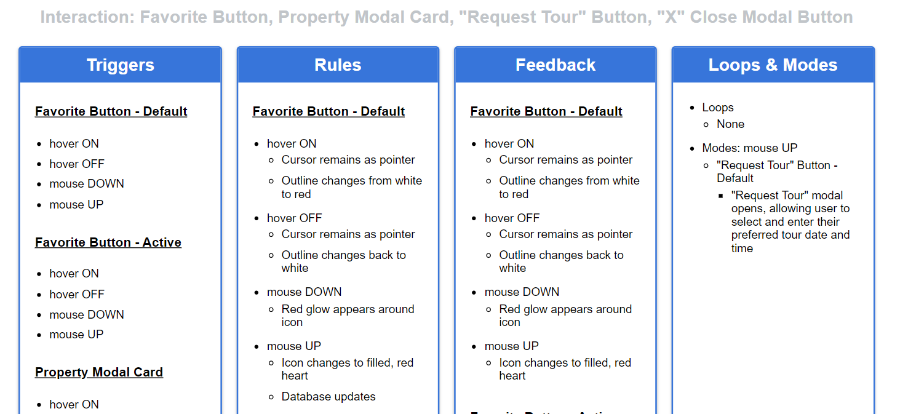
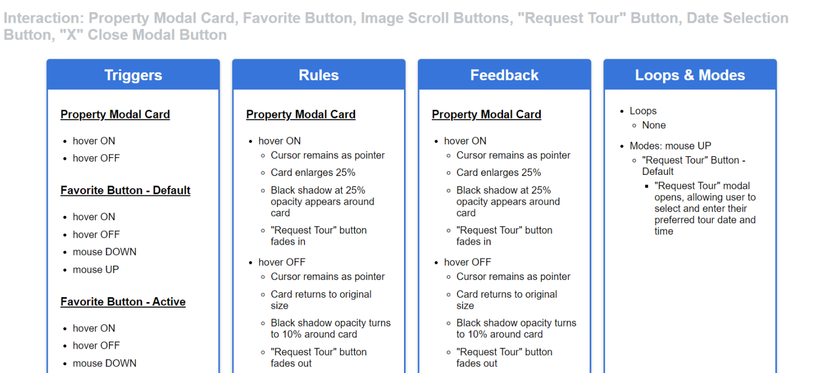

Process & Insights: Beta to Final Build
Development
The journey from concept to completion was an iterative process, refining ideas and implementing feedback at each stage. This structured approach allowed me to systematically improve both the design and functionality of Zillow’s property cards.
Beta Description: Conceptualizing Microinteractions
The process began with creating a beta description where I outlined four key microinteractions to include in the redesign. For each microinteraction, I defined:
- Triggers: What actions would initiate the interaction.
- Rules: The conditions and logic governing the behavior.
- Feedback: How users would see or feel the results of their actions.
- Loops & Modes: How the interaction would repeat or adapt over time.
This initial step helped solidify the framework for the redesign, ensuring each microinteraction was purposeful and user-focused. Once completed, I presented the description to my instructor, whose feedback highlighted areas to clarify and improve.

Beta Build: Executing the Vision
Using the beta description as a foundation, I moved on to the beta build, where I began developing the microinteractions. A key challenge was replicating Zillow's property card design to maintain consistency with the original platform. This required careful attention to layout, spacing, and styling to ensure the new interactions felt cohesive with Zillow’s branding.
During this phase, I focused on implementing the initial four microinteractions, including hover effects and an enhanced favorites button. Feedback from my instructor at this stage emphasized further refinement, prompting me to make adjustments and prepare for the final iteration.
Final Description: Expanding the Scope
After addressing feedback on the beta build, I revisited the description to expand and refine it. In this final description, I outlined all six microinteractions I wanted to integrate, ensuring they aligned with both user needs and design goals. Additional wordings were revised for clarity, and I incorporated critiques to make the plan more comprehensive and actionable.

Final Build: Bringing the Vision to Life
The final build marked the culmination of the iterative process, combining the improved microinteractions into a cohesive property card design. All six interactions were implemented, including hover effects, loading screens, and the "Request Tour" button. Each interaction was polished to ensure seamless transitions, consistent feedback, and a user-friendly experience.
This iterative approach—starting with the beta description, evolving through the beta build, and refining into the final build—allowed me to deliver a thoughtful and well-executed redesign. It reinforced the importance of planning, feedback, and continuous improvement in creating an effective user experience.